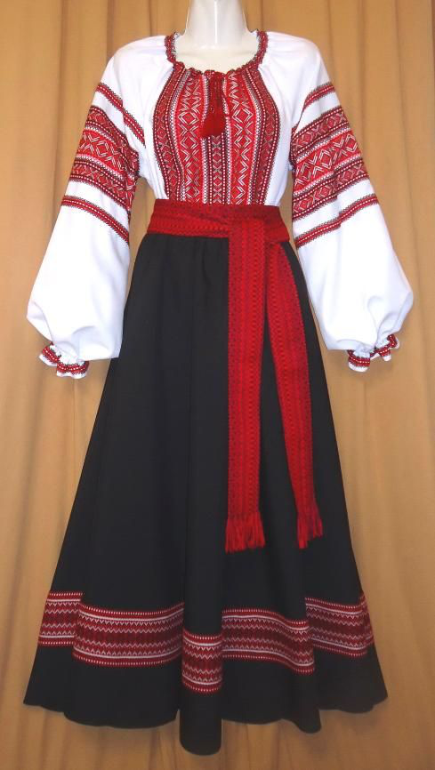

What are the traditional clothes of Ukraine
(Traditional clothings of Ukriane may be diffrent for every person)
* It basically starts with long skirts with head wraps for girls and a decorated white shirt with stretchy red pants for the guys.
* These clothes have allot of names but it is well known from the old times that its called:
- ryshniki
* The Ukrainian people believe that there traditional clothings is a sign of protection and a ritual ofr there hearts.
